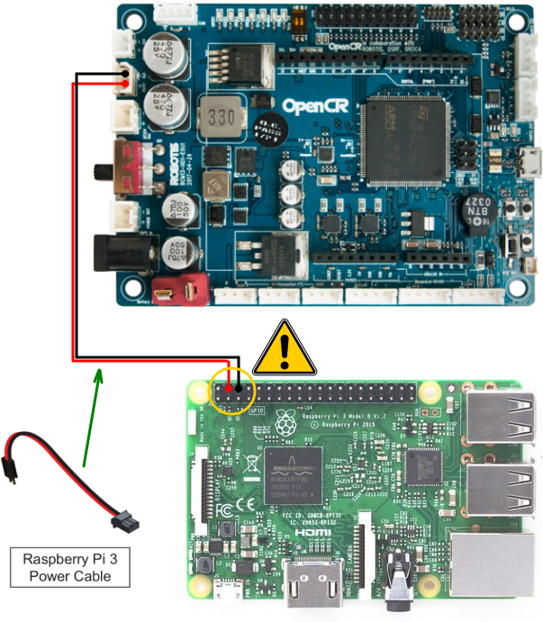

II. Robotique de navigation avec Turtlebot
Prérequis
- Lycée et +
- Notions de Python et commandes dans un terminal
- Aisance en géométrie 2D
- Le TP d'introduction
- Ce TP est compatible avec la simulation si vous n'avez pas de Turtlebot
Diapositives
Travaux pratiques
1. Assemblage du Turtlebot (avec un robot réel)
⚠️ Attention la documentation officielle du Turtlebot convient très bien pour l'électromécanique mais la documentaiton logicielle est obsolète, ne tapez aucune commande de la documentation sans avoir demandé si elle convient !
⚠️ Attention : vous ne pourrez faire aucune erreur de câblage sauf avec le câble d'alimentation de la Raspberry Pi qui doit impérativement être branché comme sur le schéma ci-dessous au risque de déteriorer définitivement le matériel.

▶️ Suivez cette vidéo pour assembler votre Turtlebot Burger :

2. Bringup du TB3 (avec un robot réel)
🔍 Vérifiez d'abord la configuration réseau de ROS sur votre PC et sur le TB3 : ROS_MASTER_URI doit pointer vers le Turtlebot. Vérifiez également que vous avez connecté le robot au Wifi et renommé votre robot en y ajoutant votre numéro de groupe (par ex burger8) avec les instructions de l'introduction.
💻 Lancez roscore dans un premier terminal.
🤖 Sur le TB3 lancer la commande roslaunch turtlebot3_bringup turtlebot3_robot.launch.
S'il n'y a aucune erreur vous êtes prêt à piloter le robot depuis votre poste de travail, que ce soit pour la téléopération, la cartographie ou la navigation autonome.
2.bis. Bringup du Turtlebot (en simulation)
⚠️ Attention la simulation du TB3 n'est a utiliser qu'en dernier recours pour remplacer votre robot s'il ne fonctionne pas. Avant de passer en simulation demandez de l'aide pour réparer votre robot.
📥 Vous devez télécharger et installer le paquet ROS de simulation du TB3 :
- 💻 Lancez
cd ~/catkin_ws/srcdans un terminal pour vous déplacer dans le dossier contenant les sources de vos paquets ROS. - 💻 Lancez
git clone https://github.com/ros4pro/turtlebot3_simulations.gitdans le même terminal, le dossierturtlebot3_simulationsest créé dans le répertoire~/catkin_ws/src. - 💻 Lancez
cd ..; catkin_make, le nouveau paquet est installé. Après la compilation lancezsource ~/.bashrcdans chaque terminal pour les mettre à jour ou fermez les tous.
🔍 La simulation remplace le robot donc vous ne devez ni essayer de lancer le bringup du TB3 et ni vous connecter au robot. À la place vous devez lancer le simulateur et configurer ROS_MASTER_URI pour pointer vers votre PC (ROS master = cette machine).
💻 Lancez roslaunch turtlebot3_gazebo turtlebot3_empty_world.launch, le simulateur Gazebo se lance et vous devez voir le TB3 au milieu de la fenêtre.
Plusieurs environnements de simulation sont disponibles :
turtlebot3_empty_world.launch: un monde vide, ne contenant que le TB3 et un sol.turtlebot3_house.launch: une maison avec plusieurs pièces et du mobilier.turtlebot3_world.launch: le TB3 est au milieu d'un carré.turtlebot3_stage_1.launch: le TB3 est dans une arène carrée.turtlebot3_stage_2.launch: le TB3 est dans une arène carré avec 4 obstacles fixes.turtlebot3_stage_3.launch: le TB3 est dans une arène carré avec 4 obstacles fixes.turtlebot3_stage_4.launch: le TB3 est dans une grande arène carrée avec plusieurs obstacles et des murs.
3. Téléopération
🎮 La première étape consiste à vérifier que votre poste de travail peut effectivement prendre le contrôle du Turtlebot, en le téléopérant via les touches du clavier.
💻 Dans un nouveau terminal lancez la commande roslaunch turtlebot3_teleop turtlebot3_teleop_key.launch et gardez le focus sur le terminal pour controler le robot avec le clavier grâce aux touches indiquées. Vérifiez que vous pouvez avancer, reculer, tourner à gauche et à droite. Vous pouvez tuer ce dernier avec Ctrl+C lorsque vous avez terminé.
4. Cartographie
🗺️ Nous allons désormais créer la carte de l'environnement dans lequel votre Turtlebot évoluera lorsqu'il naviguera de manière autonome.
💻 Lancez le commande roslaunch turtlebot3_slam turtlebot3_slam.launch. RViz se lance et vous devriez apercevoir le robot, les scans du LIDAR et la carte en construction.
💻 Dans un nouveau terminal lancez la commande roslaunch turtlebot3_teleop turtlebot3_teleop_key.launch et gardez le focus sur le terminal pour contrôler le robot avec le clavier comme précédemment. Cependant cette fois-ci, votre carte est en cours d'enregistrement. Quand la carte est terminée ne quittez ni RViz ni le terminal de la cartographie.
💻 Dans un nouveau terminal lancez la commande roscd turtlebot3_navigation/maps/ pour aller dans le dossier où la carte est enregistrée.
💾 La commande qui va suivre va supprimer la carte précédente s'il y en a une, le cas échéant faites-en une copie si vous souhaitez la conserver. Lancez la commande roslaunch ros4pro map_saver.launch qui va sauvegarder la carte dans les fichiers maps.yaml et maps.pgm et écraser les anciens.
5. Navigation
💻 Lancez le commande roslaunch turtlebot3_navigation turtlebot3_navigation.launch pour lancer la localisation et la navigation autonome.
👀 Sur RViz vous devez voir le robot, les scans du LIDAR, les particules de AMCL et la carte que vous avez enregistrée.
📍 Si le robot est mal localisé, utilisez l'outil 2D Pose Estimate sur RViz. Cliquez et Glissez avec la souris pour positionner le robot sur la carte.
📍 Pour donner des ordres de navigation, utilisez l'outil 2D Nav Goal sur RViz. Cliquez et Glissez avec la souris sur la carte là où le robot doit aller.
6. Scenario de navigation
🚗 L'objectif final du TP est de faire passer le robot par une suite de 4 ou 5 points de passage, comme pour une patrouille, avec un retour au point de départ. Si cela n'est pas déjà fait, choisissez plusieurs points de passage faciles à mesurer avec un mètre depuis le point de départ, avec un grand nombre d'obstacles sur le chemin. Si l'environnement a fortement changé, pensez à enregistrer une nouvelle carte.
🐍 Les commandes pour naviguer jusqu'à chaque point de passage seront des instructions dans un fichier Python. Le noeud navigation_scenario.py auquel vous pourrez accéder en tapant roscd ros4pro/src/nodes est une ébauche de script Python pour y parvenir.
🐍 Complétez ce fichier Python afin d'exécuter le scenario et ainsi effectuer la patrouille. Pour exécuter le scénario lancez la navigation en arrière plan comme indiqué dans 2.5 Navigation puis lancez la commande rosrun ros4pro navigate_waypoints.py.
🧳 Challenge additionnel : Carry my luggage
Challenge inspiré de l'épreuve "Carry my luggage" de la RoboCup @Home. Pour info, le réglement de la compétition se trouve ici (mais ça n'apporte rien pour votre projet) : https://athome.robocup.org/wp-content/uploads/2019_rulebook.pdf
🗺️ Prérequis : avoir une carte représentative de l'environnement.
➡️ Phase 1 : Follow me
Vous avez toute liberté pour préparer le début de l'épreuve (ex. comment faire que le robot soit bien localisé dès le début ?).
Le robot part d'un point connu et doit suivre un humain qui va à un endroit inconnu par le robot (mais à l'intérieur de la carte). L'humain commence l'épreuve en étant en face du robot à une distance de 50 cm.
Le robot doit suivre l'humain en maintenant une distance comprise entre 20cm minimum et 1m maximum.
Pour être valide, l'humain doit avoir un déplacement non trivial : il ne va pas toujours tout droit et il fait varier sa vitesse de marche dans la limite du raisonnable. Distance minimum de marche demandée 4 mètres (mais vous êtes libres de faire plus si ça vous arrange, ça n'impactera pas directement la note). Il faut obligatoirement que le robot traverse une porte.
Lorsque l'humain est arrivé à sa destination, il s'arrête pendant une durée d'au moins 3 secondes. Le robot doit alors comprendre que la phase 1 est terminée et passer à la phase 2.
↩️ Phase 2 : Go home
Le robot doit repartir et naviguer en totale autonomie jusqu'à son point de départ. Sur le retour, vous rajouterez jusqu'à :
- 1 obstacle statique sur son chemin de retour
- 1 obstacle dynamique (typiquement un humain qui lui coupe la route)
- 1 obstacle qui bloque complètement le passage prévu par le robot (il faut qu'il ait la possiblité d'arriver à destination par un autre chemin)
Si le robot arrive à destination (à +-20cm, +-15°) la phase 2 est validée.
↙️ Phase 3 : Dock
Le robot doit chercher où se trouve sa base et s'y accoster. La position grossière de la base est connue mais cette partie n'est validée que si le robot réussi un accostage précis sans contact : la distance entre le robot et la base soit être supériere à 5mm et inférieure à 2cm.
Vous avez toute liberté pour choisir un objet qui représentera la base du robot. Un pot de peinture par exemple serait un choix pertinent (la symétrie radiale peut simplifier la détection).
Documentation
- FAQ des robots
- Documentation du TB3 (obsolète pour les commandes logicielles !)
- gmapping
- move_base

📚 Auteurs
Jessica Colombel (Inria), Rémi Fabre (CATIE), Jean-Baptiste Horel (CATIE), Yoan Mollard (Bordeaux INP), Alexandre Péré (Inria), Steve N'Guyen (LaBRI) .
💬 Besoin d'aide ?
Posez votre question sur le forum francophone des utilisateurs de ROS.
📅 Dernière mise à jour : 2021-01-03T19:14:24+01:00